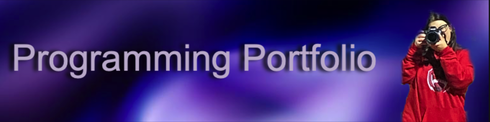

Bellas Hobbies
- photography
- programming
- reading
My name is Isabella DeLuca. I am a freshman at the University of Rhode Island.
I am majoring in Computer Science. I took a liking to computer science during my Junior year of highschool and have been hooked on it ever since.
I have two younger siblings, a brother and a sister.
Since I am the oldest I am the first to go to college. Fun fact: My brother is trying to copy me by going to URI as well.
I am a first gen college student within my family. My dad owns a restaurant in Somerville called Avenue Kitchen & Bar! (Go check it out)
I have had two jobs since I was 15. I work at an icecream shop as well as a daycare back at home.
As we saw my hobbies I was the photographer for Boys and Girls Varsity soccer during my senior year.
I also love singing, which is why I was apart of the musicals at my highschool. I hope you learned alittle about me and who I am!